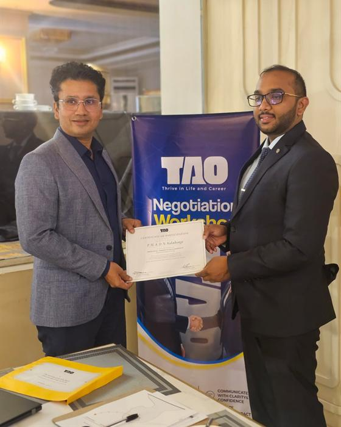

Facilitators
Practitioners with complementary disciplines.
TAO's programmes are led by facilitators who practise what they teach — communication and leadership on one side, international negotiation and mediation on the other.
Didula Weerasekara
Communication • Leadership • Presence • Influence • Professional Communication
Harshadewa Amaratunga
Negotiation • Mediation • Conflict • Access Negotiation • High-Stakes Communication
Together
Being understood, and reaching agreement — the two halves of most professional conversations.

Working together
Why the combination matters.
Most professional conversations need both disciplines. A negotiation fails when people misunderstand each other. A clearly communicated message still fails when interests collide and nobody knows how to move forward.
In TAO programmes the two strands meet: communication and leadership skills that help people be understood, and negotiation and mediation skills that help them reach — and keep — agreement.
Communication decides whether people understand each other. Negotiation decides what they do next.